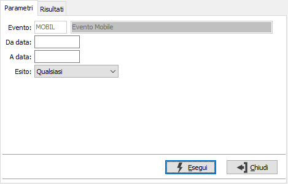
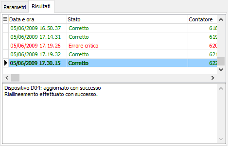

Analisi esito riallineamenti
La procedura consente di analizzare gli esiti dei riallineamenti effettuati con i vari dispositivi. Sono presenti due pagine video, una per i parametri ed un a per visualizzare i risultati.

Vengono richieste le date di analisi ed il tipo di esito da controllare; è possibile controllare tutti gli esiti, i completati con avviso, i completati senza avviso e gli interrotti con errore; la pressione del pulsante Esegui effettua l'analisi e mostra i risultati nella seconda pagina. I risultati sono evidenziati in colori diversi; verdi gli esiti corretti e rossi gli errori critici; scorrendo i vari eventi nel riquadro in basso viene mostrato il dettaglio dell'evento.
